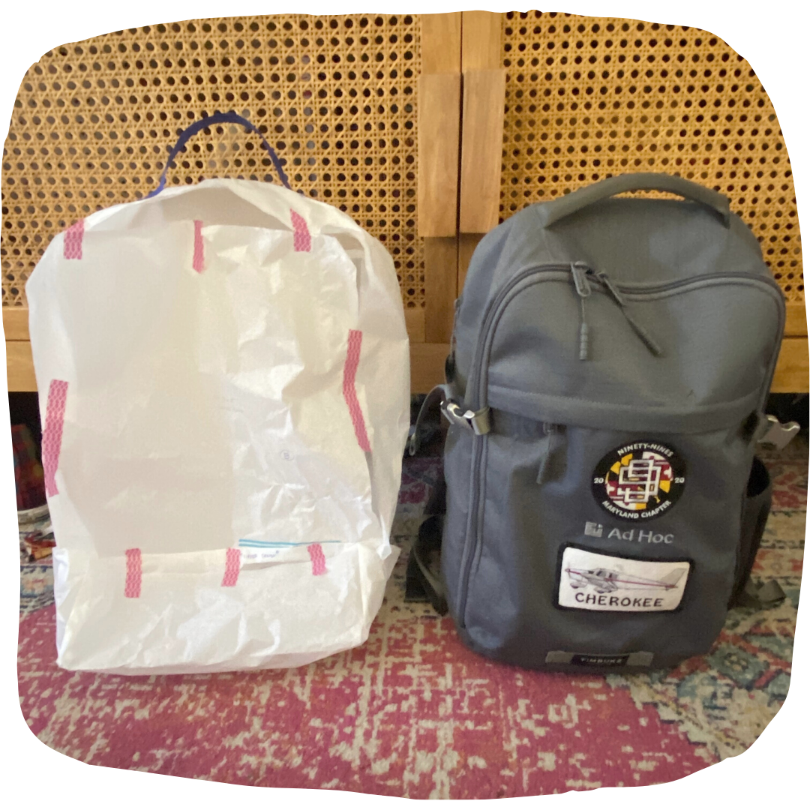

The Aura Flight Bag is a backpack-style, custom-designed flight bag. It's currently in development by me, Sophia Dengo, a private pilot and member of the Ninety-Nines, who has yet to find her ideal flight bag. At the moment, this site serves as my submission for the D4 Award, sponsored by the DC 99s.
You'll find sketches, thought processes, a preliminary PDF pattern, materials suggestions and instructions for creating your own version of the Aura. The site will remain online and evolving as I iterate on the bag.
The first iteration was a paper prototype of the Aura, shown next to the Timbuk2 backpack I'm currently using as a flight bag.